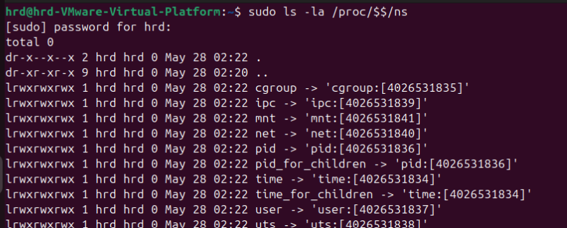

Docker Internals
The Real Magic Behind Containers
Kernel Primitives to Cloud-Native Power
Why Containers?
- Consistent environments: Solves the “works on my machine” problem.
- Efficient isolation: They isolate apps without VM overhead, making them lightweight and fast.
- Portability: A container image runs anywhere a runtime is present, regardless of infrastructure.
- Cloud-native ready: Containers are the backbone of microservices and scalable architectures.
- Improved security: Containers isolate apps, reducing risk and making failures less impactful.
- Effortless scaling: Easily add or remove containers to scale and support rapid development.
- Automated management: Orchestration tools automate deployment, updates, and monitoring.
What is a Container?
- A container is a lightweight, isolated unit that packages an application and all its dependencies
- Runs as a process on the host, sharing the Linux kernel
- Isolation and resource control provided by kernel features, not by running a separate OS

Container vs Virtual Machine
| Feature | Container | Virtual Machine |
|---|---|---|
| Kernel | Shares the host OS kernel | Runs its own kernel (guest OS) |
| Startup Time | Very fast (seconds) | Slow (can take minutes) |
| Resource | Lightweight, low memory and CPU overhead | Heavy, higher memory and CPU overhead |
| Image Size | Small (megabytes) | Large (gigabytes) |
| Isolation | Process-level isolation (shared kernel) | Full system isolation (hardware-level) |
| Portability | High, but kernel-dependent | Very high, can run any OS on any host |
| Density | Can run many containers per host | Fewer VMs per host due to overhead |
| Use Case | Microservices, cloud-native apps, CI/CD | Legacy apps, running multiple OS types |
| Management | Managed by Docker Engine (orchestrators like Kubernetes) | Managed by hypervisor (VMware, Hyper-V, etc.) |
The Magic: Namespaces & cgroups
- Namespaces: Isolate what a process can see, such as files, processes, and the network, creating a private environment for each container.
- cgroups: Control how much resource a process or group can use, including CPU, memory, and I/O, ensuring fair resource sharing.
- Together, they create the powerful illusion of a standalone system for every single container running on a shared host.
- Fine-grained resource limits: cgroups allow you to set precise limits on CPU, memory, disk, and network usage for each container or group of processes.
- Prioritization and accounting: cgroups can prioritize critical workloads and track resource usage per group, helping with monitoring and billing.
- Dynamic resource control: Administrators can freeze, stop, or restart all processes in a cgroup with a single command, enabling flexible operations and maintenance.
- Isolation for security and stability: Namespaces ensure containers cannot see or affect each other’s resources, boosting both security and system stability.
Linux Namespaces
- PID: Process IDs - separate process trees
- NET: Network - own interfaces, IPs
- MNT: Mount - own filesystem view
- UTS: Hostname/domain isolation
- USER: User/group IDs
- IPC: Shared memory, message queues
- CGROUP: cgroup view isolation
To list namespaces use the following command
Linux cgroups
- Resource management: Control Groups enable efficient resource management for groups of related processes on a system.
- Set limits: Limit CPU, memory, disk I/O, and network bandwidth for each group of processes to prevent resource contention.
- Prevent hogging: Prevent resource hogging and ensure fair allocation by enforcing quotas and priorities for all workloads.
- Hierarchical organization: cgroups are hierarchical, letting you nest and organize groups for complex resource policies and inheritance.
- Dynamic adjustment: Resource limits and priorities can be dynamically adjusted on-the-fly without restarting processes or containers.
- Isolation and containment: cgroups, together with namespaces, isolate workloads for improved security and system stability.
How CPU Limits Work
- CPU quota/period controls total CPU time for all processes in a cgroup
- Example:
echo "200000 100000" > cpu.maxallows up to 2 CPU cores (200%) - All threads in the cgroup share this quota
- If quota is 100%, all threads together can use one core's worth of CPU time per period
Multi-Core, Multi-Threading, and Hierarchy
- On multi-core systems, quota is distributed across all cores
- Threads can run in parallel; when the total quota is used up, all are throttled until the next period
- Example: On a 4-core system, a 200% quota allows all 4 cores at 50% each, or 2 cores at 100%
- CPU time can also be distributed by weight among child cgroups (proportional sharing)
Container Myths vs Reality
-
“Containers are just lightweight VMs.”
Reality: Containers are isolated processes sharing the host kernel! -
“Containers are always secure.”
Reality: Kernel vulnerabilities can affect all containers on a host.
Life of a Docker Container

- Created → Running → Paused/Unpaused → Stopped → Deleted
- You can
pause,unpause,stop,rmcontainers at any time